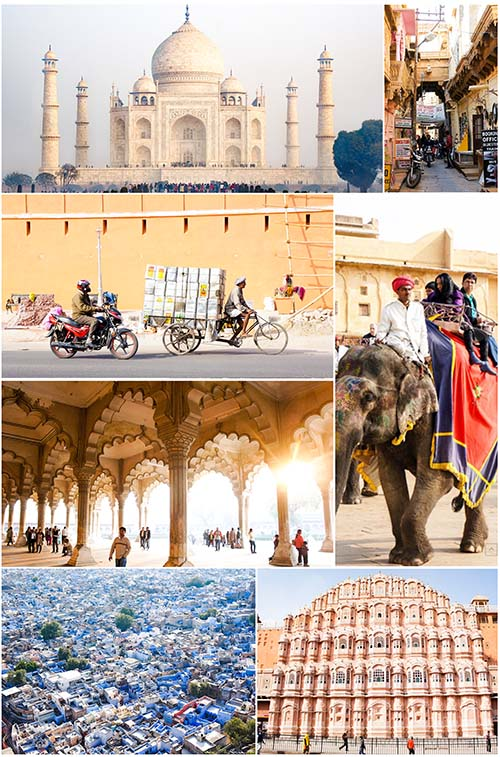
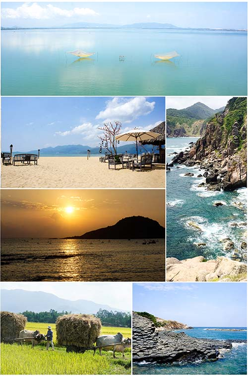
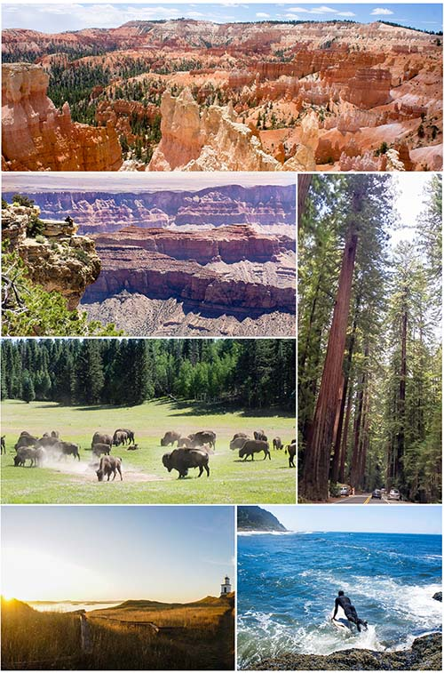

Inspiring travel to India, Vietnam, and the American West
Considerations: What do guests want to experience?
I aligned content with the goals of the brand to inspire travel.
My purpose in creating content is to provide expert level experiences for guests. This revolves around three major things: amazing experiences, culture, and food.
I started by writing 'day by day' travelogues based on firsthand experiences and assembling mood boards from my personal travel photo collection to bring the places to life.
India

Culture and Wonder
Vietnam

Moments and Memories
The American West

Landscapes and Journeys
Domain Research
I asked many questions to guide the content. What do the guests search for in an amazing experience, specifically in India, Vietnam, or the American West? Are they looking for landscapes, cities, architecture, a journey, a weekend, unexpected surprises, comfort, adventure, personal accounts? How are they searching? Why does a piece of content inspire them? How do I tell a story that excites their interest? How does this fit into the vision that the site has for itself?
Think with Google has assembled amazing research about how
Travel Micro-Moments
fit into the customer journey:
85% of leisure travelers decide on activities only after having arrived at the destination
According to Think with Google there are 4 main micro-moments, I-want-to-get-away, Time-to-make-a-plan, Let's-book-it, and Can't-wait-to-explore.
An important goal is to capture these moments as travelers engage with content. Travelers are interested in photos and points of interest but first they need the content to show up in their searches. In these moments content must be relevent to the traveler.
Over 40% of travelers say they bounce back and forth between dreaming about and planning their next trip—zooming in on the details for one destination and then zooming out to reconsider all the options again… 40% of US travel site visits come from mobile.